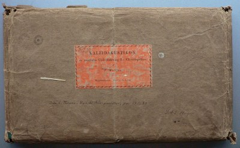
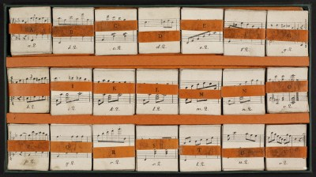

Critical Commentary
Description of Sources
Source A
DK-Kk, Kuhlaus Samling (Fog nr. 215), mu6411.1250
Source A in original wrapping.
The Royal Library's exemplar of Kaleidakustikon is wrapped in sturdy, dark-brown packing paper. An orange label with the printed text, KALEIDAKUSTIKON, / en musikalsk Underholdning for Claveerspillere, / af / F. Kuhlau. / Kjöbenhavn. Hos C. C. Lose., has been pasted on the centre of the front of the parcel. At the top to the left on the label, the signature B.I.22. has been added in pencil; below the label on the packing paper Vide C. Thrane: Danske Komponister, pag. 137-138 / S.A.E. Hagen. has been added in black ink.
Source A in box without lid.
Kaleidakustikon consists of twenty-one piles of cards in sturdy cardboard arranged in three rows in a cardboard box measuring 19.7 x 35.8 x 1.7 cm. The sides of the box are lined with green linen. An insertion of orange cardboard keeps the piles of cards in place. The box may also be used for holding the chosen card and may, for example, be placed on a music stand. Lid and instructions are lacking.
Each pile of cards is provided with a band of orange cardboard imprinted with the pile's letter (A...V); the band of pile H is not original and lacks the imprint. Each pile contains eleven cards, marked with the pile's letter and the figures from two to twelve (namely, all the scores possible when throwing two dices); that is, for instance, a2 to a12 in pile A. Cards h3 to h10 are lacking. Each card measures c. 5.4 x 4.8 cm. The cards lithographically produced.
Source B
Private collection(?)
Provenance: Jean-Paul Morin
To date, the only other known exemplar was sold at an auction of Jean-Paul Morin's collection of curiosa on 19 December 2012 in Paris. Unfortunately it has not been possible to establish contact with the present owner of this exemplar.1 However, the auction house's illustration of the Dutch exemplar makes it possible, however, to provide a source description of the item:
The cards are placed in a box lined with orange linen. The lid and base are apparently hinged together employing the same orange linen. Each pile of cards is kept together by a white paper or cardboard strip without imprint. Contrary to Source A, there is no division of the box in three rows. It cannot be used, therefore, as a stand for the chosen cards; however, the box includes a plate or a piece of cardboard lined with blue paper or linen which seems to function as a stand for the cards when they are stuck into the three long pockets on the plate.
The illustration shows the entire cards k2–k3 and k5–k12 as well as the first page of the manual. See instructions for a complete transcription of the text of the manual. According to the auction house's description, the present exemplar is lacking a card.
Evaluation of Sources
Source A is the only exemplar to which the editors have had access, and it has therefore been chosen as main source. Additional exemplars might be able to complement the edition, if they turn up sometime in the future.
On basis of the auction house's photo, Source B has been chosen as main source for the instruction manual which is lacking in Source A.
Emendations and variant readings
In the interactive computer screen version, the cards are reproduced in facsimile (photographic reproduction), unaltered except from a minor trimming in order to position the cards uniformly.
The emendations and notational modernizations listed below have been carried out in the edition's XML data and thus apply to the XML, PDF, MIDI, and MP3 files generated. In this context, the term 'edition' therefore refers to these edited formats rather than the photographic reproduction of the cards.
In Source A, the cards h11 and h12, which are in F minor rather than F major, are notated with three flats (B, A and D) instead of four. Consequently, the following cards in the middle row (H–O) are read in melodic F minor – that is, with the leading note E instead of E-flat.
For technical reasons this notation has been modernized to F minor in the present edition, employing the key signature of four flats but with the natural added to all Es in the row.
Abbreviated notation in piles I–N, employing white note heads with repetitive quaver rhythms () in the left hand, is expanded to quavers ( ).
Music
| Card | Stave | Comment |
|---|---|---|
| a6 | r.h. | A: note 6: ♭ added in ink |
| k5, k7 | r.h. | B: grace notes preceding note 2: demisemiquavers () instead of quavers () |
| o2–o12 | double bar-line emended to final repeat bar-line because of repetition marking on pile H cards |
Manual
| Item | Sentence | Comment |
|---|---|---|
| 5 | 2 | ending comma emended to full stop |
| 6 | 2 | Buschstaben emended to Buchstaben |